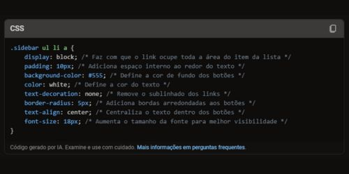

Conteúdo 3
Este é o conteúdo principal do site.
Transformação em Botões
Para transformar os itens do menu em botões, usei as seguintes propriedades CSS:
Sensibilidade ao Passar o Cursor
Para tornar os botões sensíveis ao passar do cursor do mouse, usei a pseudo-classe :hover. Isso permite que o estilo dos botões mude quando o cursor está sobre eles:
Essas alterações tornam o menu mais interativo e visualmente agradável. Se precisar de mais detalhes ou tiver outras perguntas, estou aqui para ajudar!